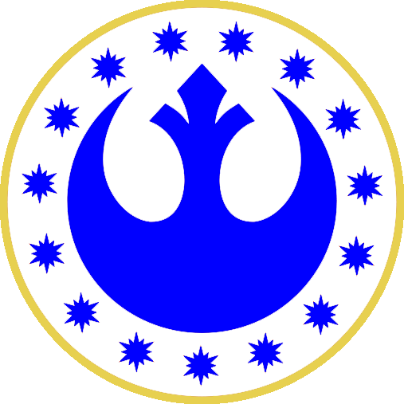

<nav class="navbar navbar-expand-lg navbar-dark bg-transparent mb-3">
  
  <a class="navbar-brand" [routerLink]="'.'">TDSC</a>
  <!-- Step 3: Toggle the value of the property when the toggler button is clicked. -->
  <button class="navbar-toggler" type="button" (click)="isMenuCollapsed = !isMenuCollapsed">
    &#8801;
  </button>
  <!-- Step 2: Add the ngbCollapse directive to the element below. -->
  <div [ngbCollapse]="isMenuCollapsed" class="collapse navbar-collapse">
    <ul class="navbar-nav">
      <li class="nav-item">
        <!-- Step 4: Close the menu when a link is clicked. -->
        <a class="nav-link" [routerLink]="'.'" (click)="isMenuCollapsed = true">
          <fa-icon [icon]="faBook"></fa-icon>
          Documentation
        </a>
      </li>
      <li class="nav-item">
        <a class="nav-link" [routerLink]="'.'" (click)="isMenuCollapsed = true">
          <fa-icon [icon]="faDiceD20"></fa-icon>
          Start Campaign
        </a>
      </li>
    </ul>
  </div>
  <button
  type="button"
  class="btn btn-outline-light mr-2"
  placement="right">
  <fa-icon [icon]="faPortrait"></fa-icon>
  Connexion
</button>

</nav>


